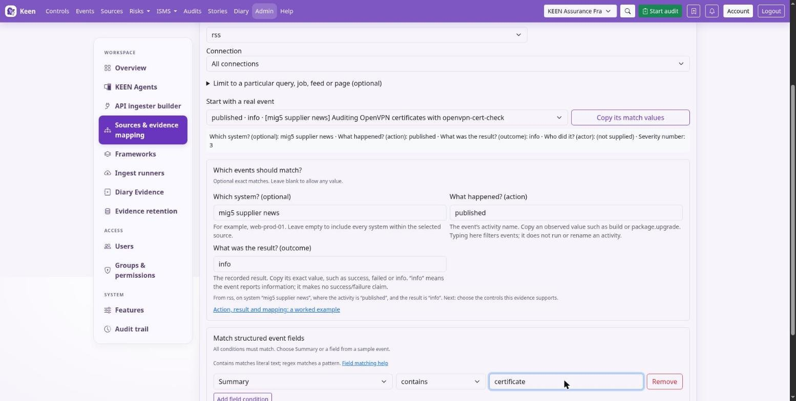
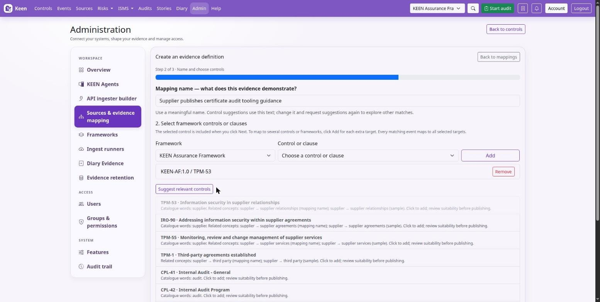
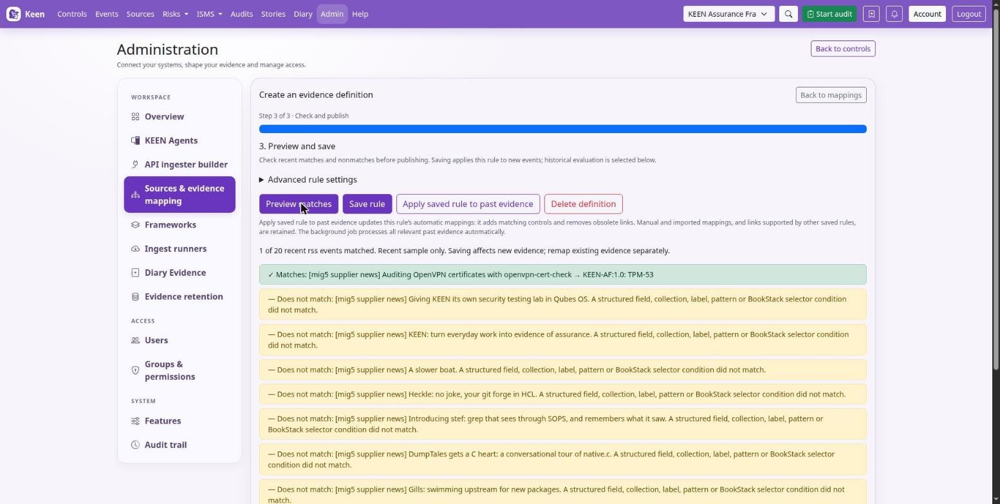

Using Keen
Build and preview evidence mappings
Chapter 4 of 17
Mapping made simple
This chapter teaches the one skill that makes Keen useful: turning a real event into a rule that links evidence to controls. Start here if the words action, outcome or mapping feel abstract. The sections that follow show the full editor, then how to keep rules healthy as evidence keeps arriving.
A mapping rule says: “When an event looks like this, link it to these controls.” Begin with an event you can already see in Keen. Its fields tell you which words go in the rule.
| Question | Keen field | Example recorded value |
|---|---|---|
| Where did it come from? | Source | jenkins |
| Which service or server? | System | prod |
| What happened? | Action / activity | build |
| What was the result? | Outcome / result | success |
| Who did it? | Actor | An account name, when provided |
Action is the activity name already written on the event, and Outcome is the result already written there. Filling either field in a rule asks Keen to find events with that value.
- Open Admin → Sources & evidence mapping → New mapping. Describe what the evidence demonstrates, such as “Production build checks completed successfully.”
- Select the source and, if relevant, its specific job, query, feed or page. Choose a recent event.
- Choose Copy its match values. Keen fills in the system, activity and result from that event. Remove any value you want to allow to vary.
- Read the sentence below the fields. For this example it should say: Jenkins events with activity
buildand resultsuccess. Keep systemprodonly if that is the event's recorded system. - Select the controls or clauses this evidence supports. One event can link to several controls and frameworks.
- Preview the matches. Look at both the matching events and the explanations for events that did not match. Publish when those examples reflect your intention.

Diagram source (Mermaid)
flowchart TB
E["Jenkins records a build"] --> A{"Activity equals build?"}
A -->|Yes| O{"Result equals success?"}
A -->|No| K["Keep the event without this rule's mapping"]
O -->|No| K
O -->|Yes| M["Link evidence to the selected controls"]
M --> R["Review evidence and assess the requirement"]
K --> X["Other rules can still match"]
- An empty optional field means any value is allowed.
- Every filled condition must match: action
buildplus outcomesuccessneeds both. - Text is case-sensitive:
Buildandbuildare different values. - Severity is an exact number:
4means severity 4.
Suggested values come from recent evidence, so they are examples of what that source has recently produced. With no recent evidence, collect a sample first. The advanced Predefine option is for sources whose values you already know.
Going deeper: what each source calls its activities and results
| Source | Typical activity | Result to expect | What to check |
|---|---|---|---|
| Jenkins | build, or the configured job kind | success, failed, info | FAILURE, ABORTED and UNSTABLE become failed. |
| RSS | published or updated | info | A published item is information; evaluate its relevance to the control. |
| Keen Agent | package.upgrade, auditd.SYSCALL, http.request | Depends on the parser: info, success or failure | A package log may report an action without claiming success. Inspect the actual event. |
| Loki / CloudWatch | The collection's configured activity | The collection's configured result | The query must select records that justify those assigned values. |
| Guided API integration | A mapped API field or configured constant | A mapped result, optionally translated | Preview the normalized event before creating its mapping rule. |
Keep the exact word the source supplies: Jenkins failed and agent failure are different values. info means an informational record with no success or failure claim. A blank Outcome can be useful for linking all maintenance activity, including records that need further review.
Collection and mapping are two steps. Collection settings decide which records enter Keen and the fields they carry. Mapping conditions read those fields and decide where to link the evidence. Change field extraction in the integration editor; change control links in sources & evidence mapping.
A mapping records a relationship; the judgement is yours. When you assess the requirement, weigh relevance, time period, scope and quality. A failed check can itself be useful evidence of monitoring or incident handling, with its failed result kept visible.
Create a mapping
The editor is in Admin → Sources & evidence mapping. A mapping, also called an evidence definition elsewhere in these guides, combines three things: a source input, the events from it that count as evidence, and the controls or clauses they support. One input can feed several mappings, and one event can support several frameworks.
Three words describe the pieces. An adapter connects to a service. A collection item is one input from it: a query, job, feed, project or page. A mapping says which events from that input support which controls. Reuse collection items when several mappings share an input.
Choose Create mapping to open the three-step editor. The example below follows a mapping for “Successful production deployments recorded by the approved deployment job.”
Step 1: Matching events


- Under Where does the evidence come from?, choose the source and, where it has several, the connection.
- Open Limit to a particular query, job, feed or page to restrict the mapping to one collection item, or to set one up. Leave it unset only when every input from that source belongs.
- Under Start from a real event, pick a Recent event and choose Copy its match values. The conditions take the exact values the event recorded, including distinctions such as “deploy” and “deployment”.
- Adjust Which events should match? Every condition you fill in has to match, and a blank box allows any value. Use Structured event fields and More filters for narrower conditions.
Prefer system, action, outcome, actor, severity or label values you can see on real events, and keep regex for patterns exact values cannot express.
Step 2: Name and controls


- Give the Mapping name as a statement of what the matching events demonstrate.
- Pick a framework and a control or clause, then choose Add. Repeat for each target, including targets in other frameworks. The framework list starts on the one selected in the navigation bar.
- Optionally choose Suggest relevant controls. Suggestions come from the mapping name and are candidates for you to review.
Only targets in the list are saved: a control still selected in the picker without Add is left out, and Next waits until the list has at least one target.
Step 3: Check and publish


- Check the Summary. Each line has a Change link back to its step.
- Choose Preview matches. Green Matches entries show the event and its proposed framework targets; amber Does not match entries explain why an event was excluded. Labels accompany the colours.
- Test a positive sample and an event that should not qualify. Make sure another collection item, a failed outcome or an unrelated environment cannot match by accident; if one does, go back and adjust the conditions.
- Under Advanced rule settings, review the confidence, whether the rule is enabled and whether to apply it to previously collected evidence, then choose Save rule. A background job runs separately from the save itself.
Confidence is your own mapping confidence between 0 and 1; compliance is assessed through evidence and review. While a source type is paused in the source catalogue, its existing evidence stays available for review and mapping.
Example. If the inspected event says system “production-api”, action “deployment” and outcome “success”, those three conditions restrict the mapping to successful deployments of that system. A failed deployment deserves its own mapping or an incident investigation; sharing the success mapping because both events came from Jenkins would blur the evidence.
Mappings before events arrive
Tick Predefine this rule before evidence is available under Advanced rule settings when there is no sample to preview. As soon as collection runs, preview the mapping against the first real events and correct any assumption about field values or collection identity.
Collection settings and credentials
A Jenkins job's kind becomes the event action and its label the event system. For Loki, configure the query and its normalised event fields. For BookStack, select a book and then a page, grouped by chapter, using the picker's page-loading buttons when needed; the picker uses the server's configured credentials.
Additional input settings (advanced) takes connector-specific JSON options, and Shared adapter settings holds advanced options common to an adapter. Neither is a place for secrets: connection credentials and adapter enablement are server settings for the hosting operator.
Historical evidence and changing rules
Rules change, and evidence already collected should follow. Apply saved rule to past evidence runs a background job that reconciles the automatic mappings this rule owns: it adds matching controls and removes links to controls you removed from the rule, including links on events that no longer match.
What stays untouched: manual and imported mappings, links still supported by another active rule, and older mappings whose rule ownership is uncertain. When the job finishes, reopen an event to review its controls.
Going deeper: remapping a wider range
Admin → Sources & evidence mapping → Evidence mapping → Remap old events supports a wider operation with source and time filters. Its normal mode finds unmapped events; Include already-mapped events permits additive mappings. Begin with a bounded range and inspect the results.
Apply rules to existing evidence
In the rule editor, Apply this rule to previously collected evidence in the background is selected by default; review it before saving. Saving the definition and finishing the background job are separate events, and the job reports its own status. You can also run Apply saved rule to past evidence on a saved rule at any time.
Admin → Remap is the broader tool, with date, limit, source, system, action and outcome filters. By default it processes events with no mappings; Include already-mapped events adds new rule-based mappings to events already linked elsewhere. Adding mappings is a different operation from removing stale ones.
Going deeper: version conflicts and revision history
If another administrator saved a newer configuration, reload it and reconcile the two versions before saving. Restore this rule's revision is available for a saved rule: its history starts at revision 1 for that rule, ignores edits to other rules, changes only the selected rule, keeps collection settings and other rules, and does not remap historical evidence. Deleting a definition keeps its historical mappings.
Create a mapping from an event
The quickest way to a good rule starts from the event page. Everything the rule needs is already on the screen.
- Open an event and choose Create mapping from this event.
- Review the suggested conditions. Field names follow the event JSON, including structured keys such as
fields → process.name,fields → host.name,fields → statusandfields → log.file.path. - Remove conditions that are too specific. A host or IP condition restricts the rule to that host or address, and event identifiers and timestamps each identify a single record.
- Give the mapping a meaningful name and choose the framework controls or clauses. The suggestion button uses the name to find relevant controls; refine the name and try again if the suggestions miss.
- Review and save. The existing-mapping browser lets you search, edit or delete rules, and the historical-application action maps evidence already collected.
A mapping attributes matching evidence to framework requirements. Collection inputs decide which remote data Keen fetches; a rule on its own does not configure a remote collection.